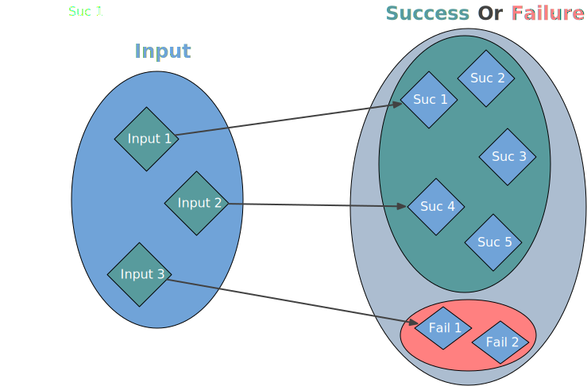

background-image: url(../img/fp-tower/website-background.svg) class: center, middle, white .title[Conclusion<br>Error Handling] --- # Exception <br> .eighty-two-left[ ```scala def checkout(order: Order): Order = if (order.status != "Draft") `throw new Exception`("Invalid status") else if (order.basket.isEmpty) `throw new Exception`("Basket is empty") else order.copy(status = "Checkout") ``` <br> ```scala checkout(Order(id = 34, status = "Draft", basket = Nil)) // java.lang.Exception: Basket is empty ``` ] --- # Exception <br> .eighty-two-left[ ```scala def checkout(order: Order): `Order` = if (order.status != "Draft") throw new Exception("Invalid status") else if (order.basket.isEmpty) throw new Exception("Basket is empty") else order.copy(status = "Checkout") ``` <br> ```scala checkout(Order(id = 34, status = "Draft", basket = Nil)) // java.lang.Exception: Basket is empty ``` ] --- # IO <br> .eighty-two-left[ ```scala def checkout(order: Order): `IO[Order]` = if (order.status != "Draft") IO.fail(InvalidStatus(order.status)) else if (order.basket.isEmpty) IO.fail(EmptyBasket) else IO(order.copy(status = "Checkout")) ``` <br> ```scala checkout(Order(id = 34, status = "Draft", basket = Nil)) // res: IO[Order] = repl.Session$App$$anon$1@473caf6b ``` ] --- # Encode errors as values  --- # Option .sixty-seven-left[ ```scala enum Option[+A] { case Some(value: A) case None } ``` <br> ```scala val users: Map[Int, User] = Map(...) users.get(111) // res: Option[User] = Some(...) users.get(444) // res: Option[User] = None ``` ] --- # Option .sixty-seven-left[ ```scala enum Option[+A] { case Some(value: A) case None } ``` <br> ```scala val users: Map[Int, User] = Map(...) users.get(111) // res: Option[User] = `Some`(...) users.get(444) // res: Option[User] = `None` ``` ] --- # Option .sixty-seven-left[ ```scala val users = Map( 222 -> User(222, "john" , Admin, Some("j@x.com")), 333 -> User(333, "elisa", Admin, Some("e@y.com")), 444 -> User(444, "bob" , Admin, None) ) ``` <br> ```scala getUserEmail(111, users) // user not found // res: Option[String] == None getUserEmail(444, users) // email not found // res: Option[String] == None ``` ] --- # Try .sixty-seven-left[ ```scala enum Try[+A] { case Success(value: A) case Failure(error: Throwable) } ``` ] --- # Try .sixty-seven-left[ ```scala enum Try[+A] { case Success(value: A) case Failure(`error: Throwable`) } ``` ] --- # Try .sixty-seven-left[ ```scala enum Try[+A] { case Success(value: A) case Failure(error: Throwable) } ``` <br> ```scala getUserEmail(111, users) // res: Failure[String] = Failure(User 111 is not found) getUserEmail(444, users) // res: Failure[String] = Failure(User 444 has no email) ``` ] --- # Try .sixty-seven-left[ ```scala enum Try[+A] { case Success(value: A) case Failure(error: Throwable) } ``` <br> ```scala getUserEmail(111, users) // res: Failure[String] = Failure(`User 111 is not found`) getUserEmail(444, users) // res: Failure[String] = Failure(`User 444 has no email`) ``` ] --- # No exhaustive pattern match <br><br> .sixty-seven-left[ ```scala val result: Try[Order] = ... result.recover { case e: UserNotFound => ... case e: EmailNotFound => ... case other => ... } ``` ] --- # Either & Validation <br><br> .cols[ .forty-five[ ```scala enum Either[+E, +A] { case Right(value: A) case Left(value: E) } ``` ] .ten[ ] .forty-five[ ```scala enum Validation[+E, +A] { case Valid(value: A) case Invalid(value: NEL[E]) } ``` ] .ten[ ] ] --- # Either & Validation <br><br> .cols[ .forty-five[ ```scala enum Either[+E, +A] { case Right(value: A) case Left(value: E) } ``` ```scala validateUsername("b!") // Left( // TooSmall(2) // ) ``` ] .ten[ ] .forty-five[ ```scala enum Validation[+E, +A] { case Valid(value: A) case Invalid(value: NEL[E]) } ``` ```scala validateUsername("b!") // Invalid(NEL( // TooSmall(2), // InvalidCharacters('!') // )) ``` ] .ten[ ] ] --- # Either & Validation <br><br> .fifty-seven-left[ ```scala val result1: Either[FormError, Order] = ... val result2: Either[String , Order] = ... val result3: Either[Throwable, Order] = ... ``` ] --- # Either & Validation <br><br> .fifty-seven-left[ ```scala val result1: Either[`FormError`, Order] = ... val result2: Either[`String` , Order] = ... val result3: Either[`Throwable`, Order] = ... ``` ] --- background-image: url(../img/foundation/application-error-hierarchy-2.svg) # Error hierarchy --- class: center, middle # Scala 3 --- # Enum syntax <br> .seventy-seven-left[ ```scala enum UserEmailError { case UserNotFound(userId: UserId) case EmailNotFound(userId: UserId) } ``` ] .seventy-seven-left[ ```scala sealed trait UserEmailError object UserEmailError { case class UserNotFound(userId: UserId) extends UserEmailError case class EmailNotFound(userId: UserId) extends UserEmailError } ``` ] --- # Union types <br> .seventy-seven-left[ ```scala def validateUser( usernameStr: String, countryStr : String ): Either[`UsernameError | CountryError`, User] = for { username <- validateUsername(usernameStr) country <- validateCountry(countryStr) } yield User(username, country) ``` ]